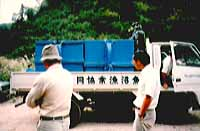
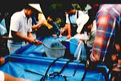
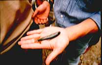

エッセイ
ウェーディングシューズを履いたサンタクロース
九月八日の朝はテントの中で目覚めた。昨夜の風雨も上がり、荒沢岳が朝日に輝く。
今日は、奥只見の魚を育てる会の10周年記念放流の日である。現地での労働力として期待されている我々としては大いに張り切らなければ、と思うが前夜祭の越乃寒梅、寝酒のウィスキー、それに丸山先生の鼾でいささか頭が重い。
朝食をすませて村杉小屋に行く。中の岐川での放流地点などを打ち合わせていよいよ出発だ。
ダム湖沿いの曲がりくねった国道を十数台の車が走ってゆく。83年の夏、先輩の車で初めて中の岐川を訪れた時のことを思うと、ずいぶんと舗装が延びたものである。
雨池橋より林道に入るとぐっと道が悪くなり、時々ガラ石が自動車の腹をこする。岩魚のためにはこの道をダイナマイトで爆破してしまう方が良いのだがなぁ.....と、邪な考えが頭をかすめる。
二岐沢の入り口で車を止めて、魚沼漁協のトラックを待つことになった。湯沢の孵化場からの約60キロの道のりを、３万尾の岩魚の稚魚を水槽に入れて運んでくるのである。その間、橋の高欄に横断幕を張り、みんなで記念写真を写す。みんな楽しそうに話をしている。元水産試験場長の古川さん、事務局の富永さん、湖山荘の佐藤さん、そして十日町の高橋さんたちが道ばたに座って、育てる会の創生期の話に花を咲かせている。
今年の夏は雨が少なかったので、中の岐川の水がとても少ない。毎年多くの木が伐り出されてきたせいもあるのだろう。
カーブの向こうからトラックが現れた。ゆっさゆっさと車体を傾げ、そのたびに水槽から水しぶきが上がる。みんないっせいに集まってくる。

トラックが止まると古川さんが真っ先に荷台に上がり水槽を覗き込む。それからはちょっとしたお祭りのような騒ぎが始まる。水槽から岩魚を袋に入れる人、受け取る人、ボンベから酸素を吹き込む人、そして袋の口を縛る人、人、人。大勢の人が手際よく作業を進めていく。

二岐沢へ放流される10袋が車で運ばれていった。トラックは本流沿いをさらに上流へと進む。みんなはそれぞれの車に分乗してトラックの後を追う。
焼けの又沢の出会いでトラックが止まる。稚魚と酸素で膨らんだビニール袋を担ぎ、橋のたもとを駆け下りる。河原を沢の上流へとひた走る。背中の袋で水と岩魚がバシャバシャ踊る。落ち込みを二つほど登った所の瀬で放すと、袋から出た岩魚たちはしばらくキョトンとしたあとでゆっくりと流れの中に泳ぎ出す。

本流沿いの数カ所に放流しながら、林道を登っていったトラックは東ノ沢の出会いで河原の近くまで乗り入れて止まった。これより先は数台の乗用車で分担して運ぶことになっている。
僕らの目的地は平家沢である。岡田、山碕、高橋名人そして平野さんの５人である。林道の橋から沢へ降りるときに石の角でビニール袋の底を破いてしまう。あわててもう一枚のビニール袋で二重にして急場をしのいだ。かなり重たい袋を担いでヨタヨタと走る。そんなに急がなくても大丈夫、とも思うがどうにも心がはやって足が速くなる。
すこし登ると魚止めの滝が現れた。この滝の上流に放流したいので決死の覚悟（というほどではない）でヘズることにする。高橋さんにはここで待っていてもらい、若い衆４人でへずり始める。まず岩にとりついて下から袋を渡してもらう。水の入ったビニール袋は肩の上で右へ左へ踊ってしまい、思わず滝壷に身体が落ちそうになる。
ぐっとこらえて力を込めて、爪先と指先とで登ってゆく。竿を持っていないとヘズリもなかなか大変である。
滝を登り、倒木を越えて100mほども登ってから緩やかな瀬を見つけ、ここに放すことにした。二つの袋から500尾くらいの岩魚が流れ出る。トラックの水槽から出してかなり時間がかかったのでさすがに岩魚も弱っている。川底の方に力無くじっとしてなかなか泳ぎ出そうとしない。４人の顔が心配そうに覗き込む。
やがて岩魚たちは、１尾、また１尾と元気を取り戻し、ゆらゆらと流れの中に泳ぎだして行った。
『大きくなれよ、大きくなれよ』 と、繰り返し心の中で呼びかけた。
沢を戻りながら、大きな袋を肩に担いで歩くのは、なんかだサンタクロースのようだなぁと自分たちの姿を思い出しておかしくなった。おもちゃの詰まった白い袋じゃなくてビニール袋。その中には岩魚がいっぱい。トナカイのそりの代わりにぼろぼろのウェーディングシューズで駆け回るのである。
そりに乗って恋の岐川や片貝沢、それに日本のあちこちの川に岩魚や山女やアマゴの稚魚を配って飛び回りたいものだと空想に耽りながら沢を下った。
滝壷まで来ると、高橋名人が手を振ってくれた。僕らも大きく手を振った。
エッセイ 目次へ
サイトマップ
ホームへ
お問い合わせ